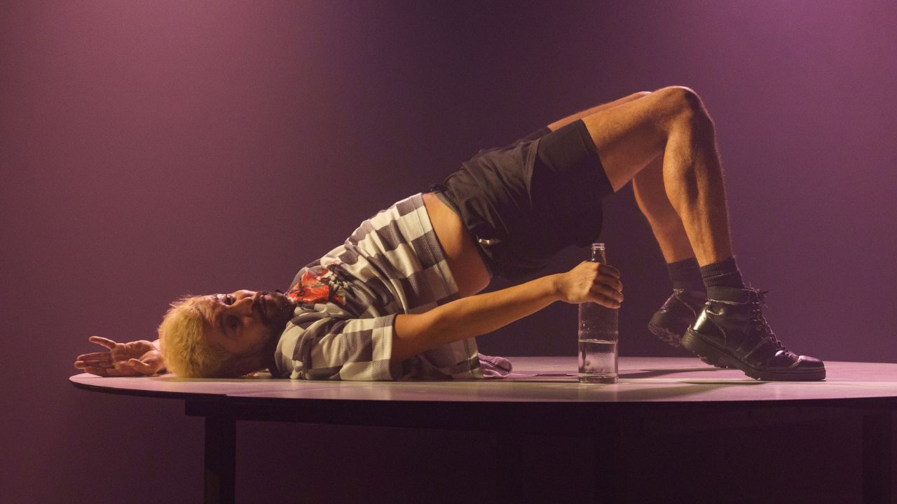

Aqui, Agora, Todo Mundo estreia no Teatro Sérgio Cardoso em janeiro de 2026

Vencedor do Coelho de Prata de Melhor Espetáculo no 33º Festival Mix Brasil, solo de Felipe Barros propõe reflexão sobre saúde mental, identidade e pertencimento ao som das canções de Jaloo
“E se a sua mente fosse um quebra-cabeça que só os outros conseguem montar?”
Vencedor do Coelho de Prata de Melhor Espetáculo no 33º Festival Mix Brasil, Aqui, Agora, Todo Mundo estreia no Teatro Sérgio Cardoso, em São Paulo, no dia 24 de janeiro de 2026, com temporada até 1º de março, e sessões aos sábados, domingos e segundas-feiras, às 19h. O espetáculo é o primeiro solo teatral de Felipe Barros, com direção e dramaturgia de Heitor Garcia, e tem inspiração no livro autobiográfico homônimo de Alexandre Mortagua.
A montagem propõe uma experiência sensível e imersiva ao abordar temas como depressão, saúde mental, identidade, pertencimento e sobrevivência emocional, especialmente a partir de um corpo gay dissidente em uma sociedade que ainda marginaliza diferenças.
Uma mente em fragmentos
Em cena, um homem tenta reconstruir a própria história após atravessar um limite extremo da existência. As lembranças surgem como flashes desconexos: a família, os afetos, os silêncios, as dores escondidas. Nada é linear. Nada é óbvio. Entre o real e o imaginário, entre o trauma e a reinvenção, o público é convidado a entrar na mente do personagem — um território instável, íntimo e poético.
A dramaturgia se organiza como o funcionamento da mente sob o impacto da depressão: fragmentada, labiríntica, em looping. Em um procedimento cênico singular, o público assume papel ativo, interferindo na ordem das cenas, o que faz com que cada sessão se transforme em uma experiência única e irrepetível.
Mais do que uma narrativa individual, Aqui, Agora, Todo Mundo se constrói como um chamado coletivo — à presença, à escuta e ao pertencimento. O espetáculo atravessa temas como adolescência gay, autoimagem, pressão da performance social e a busca por afeto em meio ao caos, propondo uma reflexão profunda sobre o que significa continuar existindo quando tudo parece querer desaparecer.
A trilha sonora como fio condutor: Jaloo em cena
A trilha sonora do espetáculo é composta a partir da obra de Jaloo, artista cuja produção dialoga intensamente com questões de saúde mental, identidade e influência externa. Suas canções funcionam como um fio emocional e narrativo, potencializando a atmosfera sensorial da encenação.
Durante o processo criativo, a DJ Agatha realizou a curadoria e decupagem das músicas, transformando-as em desenho sonoro e trilha da peça. Cada faixa se conecta diretamente às cenas, criando um elo sensível entre as emoções do personagem e o ritmo da narrativa fragmentada.
Jaloo, nome artístico de Jade de Souza Melo, é cantora, produtora e DJ paraense, referência do pop, indie e eletrônico brasileiro, reconhecida por sua fusão de ritmos regionais com batidas eletrônicas e por sua afirmação de identidade não-binária e de gênero fluido.
Sobre o espetáculo
Aqui, Agora, Todo Mundo é um grito silencioso e uma dança urgente. Um convite à escuta de um corpo que resiste. Ao transformar memória, trauma e sobrevivência em experiência cênica, o espetáculo reafirma o teatro como espaço de acolhimento, reflexão e presença.
Serviço
Aqui, Agora, Todo Mundo
📅 Temporada: 24 de janeiro a 1º de março de 2026(exceto de 12 a 15 de fevereiro)
🕖 Sessões: sábados, domingos e segundas-feiras, às 19h
🎭 Local: Teatro Sérgio Cardoso
📍 Rua Rui Barbosa, 153 – Bela Vista – São Paulo
🎟 Ingressos:R$ 80 (inteira) | R$ 40 (meia-entrada)
🎫 Lista Trans Free: envie e-mail para
📩 aquiagoratodomundo@gmail.com
🛒 Vendas: Sympla
🔞 Classificação: 14 anos
⏱ Duração: 60 minutos
👥 Capacidade: 144 lugares
📱 Instagram: @aquiagoratodomundo
🎤 Rodas de conversa pós-espetáculo:
📅 2, 9 e 23 de fevereiro